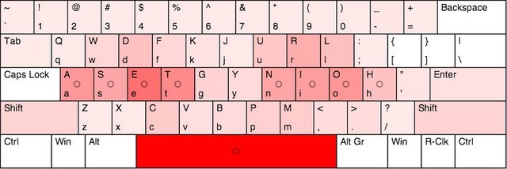

Compare
46% less effort, the comparison summary
Using the Workman key cap scores, Norman's score is 46% less than QWERTY's. If you prefer finger travel metrics, Norman has 44% less distance travel from the home row than QWERTY. Both metrics beat Colemak, Dvorak, Klausler, Minimak, QGMLWY, Workman, and Asset. Using the andong analysis, the metrics are much different, but still put Norman in the lead over others with 23% less effort than QWERTY.
Workman key cap scores
Forgoing sophisticated mathematic models, I re-ran a similar Carpalx-style ranking test using the scoring used per key cap in the Workman layout. Every time a letter is used, it adds to a simple counter. In scoring a body of literature with Workman, letter S adds 1 point to the total, D is 2 points, and so on.

When scoring the following sentence, lower is better:
The quick brown fox jumps over the lazy dog.
- QWERTY: 90
- Asset: 71
- Capewell: 73
- Colemak: 73
- Dvorak: 62
- Klausler: 76
- Minimak: 70
- Norman: 70
- QGMLWY: 69
- Workman: 68
For this analysis, the following were concatenated into a single document: Drupal 7.17, The Hunger Games by Suzanne Collins, CISSP 5th ed exam guide by Shon Harris, The Montessori Method by Maria Montessori, Alice in Wonderland, Dracula, Great Expectations, Huckleberry Finn, Moby Dick, Picture of Dorian Grey, Pride and Prejudice, Sense and Sensibility, The Adventures of Sherlock Holmes, The Adventures of Tom Sawyer, The Count of Monte Cristo, Ulysses, Walden, the front page of Slashdot on November 15, 2012, a sample from the global feed of app.net.
By counting the frequency of each character in the combined text, the letter frequency was the following:
etaoinsr hd lcumfpygwbvkxjqz
Spaces were added for emphasis. Note, the first list of 8 letters are in the home row of Asset, Colemak, and Norman. The 8 home row letters account for 62.9% of all letters typed, excluding whitespace, numbers, and punctuation; the first 10 are 71.8%. Considering just the placement of letters, a huge majority of typing in Norman is either on the home row, or in the natural stroke of the middle fingers.
Scoring the Norman layout using the Workman key cap model, the following is the outcome for the concatenated document. Lower is better.
- QWERTY: 87,341,770
- Dvorak: 57,389,636
- Klausler: 54,102,945
- QGMLWY: 52,374,051
- Minimak: 51,193,339
- Asset: 50,583,227
- Capewell-Dvorak: 50,344,818
- Colemak: 49,709,750
- Norman: 46,936,221
- Workman: 46,582,636
To try some analysis of your own, I posted the PHP script I wrote for examining various text inputs in a gist.
Carpalx metric
The Norman layout scores about the same as the Workman or Dvorak layouts using the Carpalx analysis. The analysis output is in the Norman download.
- QWERTY: 3
- Dvorak: 2.098
- Norman: 1.993
- Workman: 1.993
- Minimak: 1.930
- Asset: 1.894
- Colemak: 1.842
The Carpalx score varies depending on the input corpus text. During my test I got anywhere between 1.9 and 2.1 by changing the text that was analyzed. The score was 2.011 using the same text used with the Workman key cap score analysis.
Note, the Carpalx analysis doesn't account for some human factors by admission of Martin Krzywinski.
The Workman layout incorporates advanced human factors and discusses their application to Dvorak and Colemak.
In recent conversation with Stephen O'Connor, who has analyzed the Workman layout, I've been persuaded to seriously reconsider the parameters in my effort model. In particular, I do not consider that the index, middle and ring fingers have different prefered motions, for a given travel distance. For example, most will agree that the ring finger prefers to extend for the W rather than curl to the equidistant X. On the other hand, the index finger has easier access to V than R.
Key frequency heat mapping
Patrick Gillespie has a keyboard layout analyzer which can accept custom keyboard layouts. Skip to the keyboard heat map in his analyzer. Then decide for yourself from the heat map if the other metrics make sense to you. The analysis from this section was based on a combined sampling of blog articles I typed myself, hosted on http://deekayen.net.
What these metrics don't show is Norman's QWERTY similarity and what I think is an increased potential for conversion success by using the same QWERTY fingers for key moves to improve your likelihood of conversion. I'm including these to show how dramatic the finger travel decreases with Norman while still being no worse in the other metrics than its competition.
Finger distance (in feet)
- QWERTY: 3122.5
- Minimak: 1942.9
- Dvorak: 1926.7
- Klausler: 1828.8
- Workman: 1822.3
- Norman: 1818.7
- Asset: 1790.5
- QGMLWY: 1761.1
- Colemak: 1761.1
- Capewell: 1728.0
- Arensito: 1715.2
Looking at these metrics, you might say the Norman layout is optimized for distance rather than finger-to-key frequency combinations. Though I don't have anything scientific to point to, it makes sense to me that almost halving the finger travel over QWERTY could contribute to an overall plan of hand-injury prevention more-so than a strategy of combination avoidance.
Home row usage (in percent)
- QWERTY: 25.7%
- Minimak: 51.1%
- Norman: 51.4%
- Workman: 51.4%
- Arensito: 52.5%
- Capewell: 52.6%
- Dvorak: 54.1%
- Klausler: 55.8%
- Asset: 56.1%
- Colemak: 56.1%
- QGMLWY: 56.1%
Note, Norman and Workman make a point of de-prioritizing the center column of keys (G and H in QWERTY) whereas Colemak considers the center column part of the home row. Workman reduces overall usage of the two middle columns by about 50% over Colemak.
Consecutive finger use
- Norman: 4.7%
- QWERTY: 4.6%
- Minimak: 3.1%
- Asset: 2.6%
- Workman: 2.4%
- Dvorak: 2.2%
- Klausler: 1.6%
- Capewell: 1.4%
- Arensito: 1.3%
- Colemak: 1.3%
- QGMLWY: 1.3%
In this case, the Norman right index and middle fingers are overloaded compared to the other modern layouts which negated any of the improvement the other layouts strived for. Norman tries to assign common characters to strong fingers and I think those are my two most agile, strong fingers.
Consecutive hand and thumb use
- Capewell: 31.0%
- Arensito: 29.7%
- QWERTY: 29.5%
- Norman: 28.4%
- Asset: 28.3%
- Workman: 27.0%
- Minimak: 26.4%
- QGMLWY: 25.8%
- Colemak: 25.8%
- Klausler: 18.5%
- Dvorak: 17.6%
Dvorak is sometimes criticized for this outcome. Long-time users sometimes comment the Dvorak layout feels jittery when alternating from hand-to-hand. In designing Workman, OJ preferred a high same hand utilization.

This heat map was generated using the 1,000 most common US English words:
Import the following for the Norman layout and some text of your own creation.
{"label":"Norman","fingerStart":{"1":29,"2":30,"3":31,"4":32,"5":56,"6":56,"7":35,"8":36,"9":37,"10":38,"11":56},"keyboardType":"standard","keys":[{"primary":96,"shift":126,"finger":1,"id":0},{"primary":49,"shift":33,"finger":1,"id":1},{"primary":50,"shift":64,"finger":2,"id":2},{"primary":51,"shift":35,"finger":3,"id":3},{"primary":52,"shift":36,"finger":4,"id":4},{"primary":53,"shift":37,"finger":4,"id":5},{"primary":54,"shift":94,"finger":7,"id":6},{"primary":55,"shift":38,"finger":7,"id":7},{"primary":56,"shift":42,"finger":8,"id":8},{"primary":57,"shift":40,"finger":9,"id":9},{"primary":48,"shift":41,"finger":10,"id":10},{"primary":45,"shift":95,"finger":10,"id":11},{"primary":61,"shift":43,"finger":10,"id":12},{"primary":8,"finger":10,"id":13},{"primary":9,"finger":1,"id":14},{"primary":113,"shift":81,"finger":1,"id":15},{"primary":119,"shift":87,"finger":2,"id":16},{"primary":100,"shift":68,"finger":3,"id":17,"altGr":-1,"shiftAltGr":-1},{"primary":102,"shift":70,"finger":4,"id":18,"altGr":-1,"shiftAltGr":-1},{"primary":107,"shift":75,"finger":4,"id":19,"altGr":-1,"shiftAltGr":-1},{"primary":106,"shift":74,"finger":7,"id":20,"altGr":-1,"shiftAltGr":-1},{"primary":117,"shift":85,"finger":7,"id":21},{"primary":114,"shift":82,"finger":8,"id":22,"altGr":-1,"shiftAltGr":-1},{"primary":108,"shift":76,"finger":9,"id":23,"altGr":-1,"shiftAltGr":-1},{"primary":59,"shift":58,"finger":10,"id":24,"altGr":-1,"shiftAltGr":-1},{"primary":91,"shift":123,"finger":10,"id":25},{"primary":93,"shift":125,"finger":10,"id":26},{"primary":92,"shift":124,"finger":10,"id":27},{"primary":20,"finger":1,"id":28},{"primary":97,"shift":65,"finger":1,"id":29},{"primary":115,"shift":83,"finger":2,"id":30},{"primary":101,"shift":69,"finger":3,"id":31,"altGr":-1,"shiftAltGr":-1},{"primary":116,"shift":84,"finger":4,"id":32,"altGr":-1,"shiftAltGr":-1},{"primary":103,"shift":71,"finger":4,"id":33},{"primary":121,"shift":89,"finger":7,"id":34,"altGr":-1,"shiftAltGr":-1},{"primary":110,"shift":78,"finger":7,"id":35,"altGr":-1,"shiftAltGr":-1},{"primary":105,"shift":73,"finger":8,"id":36,"altGr":-1,"shiftAltGr":-1},{"primary":111,"shift":79,"finger":9,"id":37,"altGr":-1,"shiftAltGr":-1},{"primary":104,"shift":72,"finger":10,"id":38,"altGr":-1,"shiftAltGr":-1},{"primary":39,"shift":34,"finger":10,"id":39},{"primary":13,"finger":10,"id":40},{"primary":16,"finger":1,"id":41},{"primary":122,"shift":90,"finger":1,"id":42},{"primary":120,"shift":88,"finger":2,"id":43},{"primary":99,"shift":67,"finger":3,"id":44},{"primary":118,"shift":86,"finger":4,"id":45},{"primary":98,"shift":66,"finger":4,"id":46},{"primary":112,"shift":80,"finger":7,"id":47,"altGr":-1,"shiftAltGr":-1},{"primary":109,"shift":77,"finger":7,"id":48},{"primary":44,"shift":60,"finger":8,"id":49},{"primary":46,"shift":62,"finger":9,"id":50},{"primary":47,"shift":63,"finger":10,"id":51},{"primary":-16,"finger":10,"id":52},{"primary":17,"finger":5,"id":53},{"primary":-91,"finger":5,"id":54},{"primary":18,"finger":5,"id":55},{"primary":32,"finger":5,"id":56},{"primary":-18,"finger":6,"id":57},{"primary":-91,"finger":6,"id":58},{"primary":-93,"finger":6,"id":59},{"primary":17,"finger":6,"id":60}]}
Andong analysis
For analysis, I concatenated a bunch of microblog posts from the front of http://alpha.app.net as real-world text to analyze.
Overall effort
- Qwerty: 10,090
- Dvorak: 8,824
- Workman: 8,396
- Colemak: 8,388
- Norman: 8,269
Effort imbalance between fingers
- Dvorak: 657
- Colemak: 628
- Workman: 605
- Qwerty: 556
- Norman: 525
Don't trust me? Try it yourself. Here is a custom layout for importing the Norman layout to http://www.andong.co.uk/dvorak/Default.aspx.
`1234567890-=
#qwdfkjurl;[]\
#asetgynioh'*N
*Lzxcvbpm,./*R
##*S#
*L
#######&**()_+
######JURL:{}|
######YNIOH"
######PM?
#
*R
~!@*#$%^
#QWDFK
#ASETG
#ZXCVB
#
The meaning of it all
Many of these metrics show that Norman is not always the premier performer in all the various possible metrics people have designed across the Internet, but it also shows the differences are small. Changing the input texts does change the analysis outputs and the rankings. Take a moment to consider the sensibility of your keyboard design.
- Do you think the center column is part of the home row?
- The majority of typing happens with ASETDHNIOR. Are those keys in a position that makes sense for you?
- How much frustration will you get changing from QWERTY to your new layout?
- How much QWERTY similarity do you need for shortcuts?
Whether you choose Norman or something else, leaving QWERTY behind is an obvious choice for dramatic change in your typing effort.